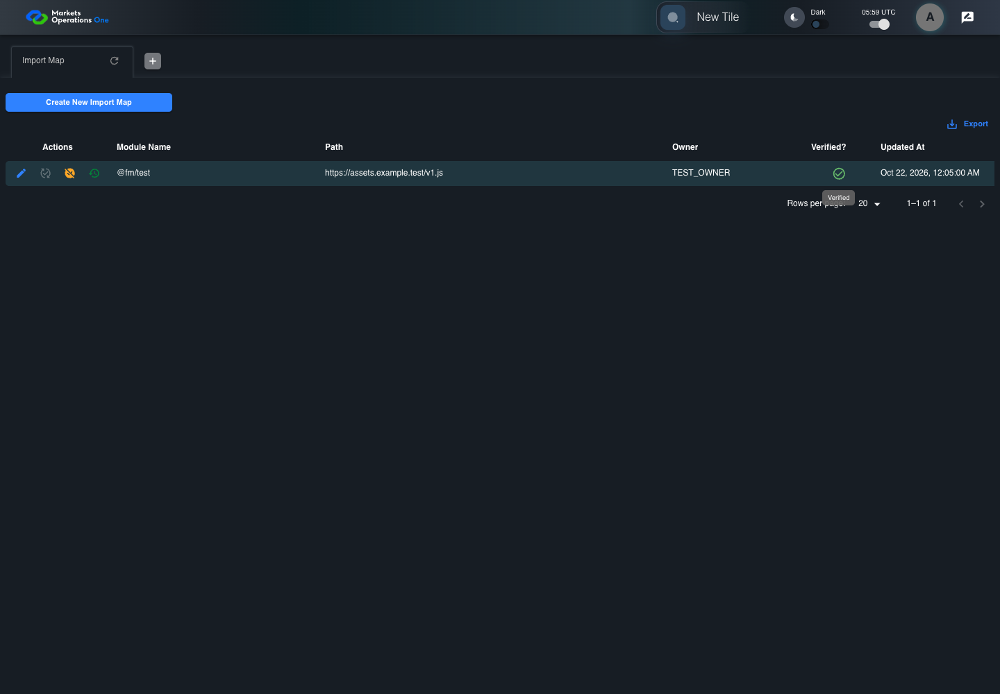

UI-ADM-MAP-009 actual administration UI with step evidence
PASS · application/run-050/ui-adm-map-009-actual-administration-ui-with-step-evidence-1a6d7f6425cb-attempt-1 · ACTUAL_APPLICATION_LOCAL_SERVICES
Actual current React administration screens. Controlled browser login supplies UI-ADMIN-01 and TEST_OWNER, or the declared SUPER_USER. Controlled BFF routes return the case-declared records. Other controlled saves persist submitted field values. This run establishes frontend handling only. It does not execute BFF validation, storage, audit generation, or authorization.
2026-10-22T05:59:33.063Z to 2026-10-22T05:59:37.240Z
Assertions and result · Artifact manifest · Exact run inputs and source hashes
Result SHA-256:02364b5fc53934d2edcda95e6cebab5355fcd9e45107c1be61094c45f07a580eMachine observations
- ui-origin-admin-requests.json
85fff87122eceedaa964aa7f85e6039a9bf9c7635937d8f8adb99eb59a4e5098
Screenshot capture: CAPTURED. Named frames: 9.
Step screenshot evidence: COMPLETE. 8/8 canonical steps have execution screenshots.
Canonical step timeline
Given Admin A is authenticated as fixture UI-ADMIN-01 with the case-specific permissions
Execution: PASSED.
1. step-01 Visible state after step 1: Given Admin A is authenticated as fixture UI-ADMIN-01 with the case-specific permissions
2026-10-22T05:59:34.751Z · 1440×1000
Step: /Users/lushevol/code/github/ratan-release-impact/workbench/tasks/ui-test-coverage-20261022/test-cases.md:8407
SHA-256:e3b0f9fc19565c05531c6efe10482168b9bbf39577aa6c46d3b54491467406f9And the Import Map admin screen is open for UI-ADMIN-01; fixture record 101 is inactive and has Path https://assets.example.test/v1.js; its owner is TEST_OWNER; the verify response returns record 101 with active true
Execution: PASSED.
2. step-02 Visible state after step 2: And the Import Map admin screen is open for UI-ADMIN-01; fixture record 101 is inactive and has Path https://assets.example.test/v1.js; its owner is TEST_OWNER; the verify response returns record 101 with active true
2026-10-22T05:59:35.644Z · 1440×1000
Step: /Users/lushevol/code/github/ratan-release-impact/workbench/tasks/ui-test-coverage-20261022/test-cases.md:8408
SHA-256:8c5c1415a703219dbc7fa910fa08faeb5601d93a8f6d45681b924839af490a8fWhen Admin A clicks icon button named "Verify" inside row with Record Id "101" in the "Import Map" administration data grid
Execution: PASSED.
3. step-03 Visible state after step 3: When Admin A clicks icon button named "Verify" inside row with Record Id "101" in the "Import Map" administration data grid
2026-10-22T05:59:35.901Z · 1440×1000
Step: /Users/lushevol/code/github/ratan-release-impact/workbench/tasks/ui-test-coverage-20261022/test-cases.md:8409
SHA-256:84daafd44147d736a5e0242b3c6e024ebe01797fed082aa9e88d8edb0addecdfAnd Admin A clicks button named "Verified" inside the dialog named "verify ID: 101" inside the "Import Map" administration tabpanel
Execution: PASSED.4. step-04 Visible state after step 4: And Admin A clicks button named "Verified" inside the dialog named "verify ID: 101" inside the "Import Map" administration tabpanel
2026-10-22T05:59:36.115Z · 1440×1000
Step: /Users/lushevol/code/github/ratan-release-impact/workbench/tasks/ui-test-coverage-20261022/test-cases.md:8410
SHA-256:d167b8a8897ba836e2547c1f2811d7ee29502c852decb9b24d23d478aa1750d5Then cell named "Verified?" inside row with Record Id "101" in the "Import Map" administration data grid contains the success icon with tooltip "Verified"
Execution: PASSED.
5. step-05 Visible state after step 5: Then cell named "Verified?" inside row with Record Id "101" in the "Import Map" administration data grid contains the success icon with tooltip "Verified"
2026-10-22T05:59:36.485Z · 1440×1000
Step: /Users/lushevol/code/github/ratan-release-impact/workbench/tasks/ui-test-coverage-20261022/test-cases.md:8411
SHA-256:35c6bacc2acf9871016798003ee6627c8c42f3a537e4aafcba587e73531ed2c4And icon button named "Verify" inside row with Record Id "101" in the "Import Map" administration data grid is disabled
Execution: PASSED.
6. step-06 Visible state after step 6: And icon button named "Verify" inside row with Record Id "101" in the "Import Map" administration data grid is disabled
2026-10-22T05:59:36.568Z · 1440×1000
Step: /Users/lushevol/code/github/ratan-release-impact/workbench/tasks/ui-test-coverage-20261022/test-cases.md:8412
SHA-256:35c6bacc2acf9871016798003ee6627c8c42f3a537e4aafcba587e73531ed2c4And icon button named "Deactivate" inside row with Record Id "101" in the "Import Map" administration data grid is enabled
Execution: PASSED.
7. step-07 Visible state after step 7: And icon button named "Deactivate" inside row with Record Id "101" in the "Import Map" administration data grid is enabled
2026-10-22T05:59:36.674Z · 1440×1000
Step: /Users/lushevol/code/github/ratan-release-impact/workbench/tasks/ui-test-coverage-20261022/test-cases.md:8413
SHA-256:35c6bacc2acf9871016798003ee6627c8c42f3a537e4aafcba587e73531ed2c4And dialog named "verify ID: 101" inside the "Import Map" administration tabpanel is absent
Execution: PASSED.
8. step-08 Visible state after step 8: And dialog named "verify ID: 101" inside the "Import Map" administration tabpanel is absent
2026-10-22T05:59:36.749Z · 1440×1000
Step: /Users/lushevol/code/github/ratan-release-impact/workbench/tasks/ui-test-coverage-20261022/test-cases.md:8414
SHA-256:35c6bacc2acf9871016798003ee6627c8c42f3a537e4aafcba587e73531ed2c4
Additional named frames

The final visible state after the named test assertions.
2026-10-22T05:59:36.849Z · 1440×1000Step: Test source: /Users/lushevol/code/github/ratan-release-impact/workbench/e2e/audit-specs/admin-expanded.spec.ts:15
SHA-256:
35c6bacc2acf9871016798003ee6627c8c42f3a537e4aafcba587e73531ed2c4Screenshots establish visible state only. Assertions and traces support functional claims.